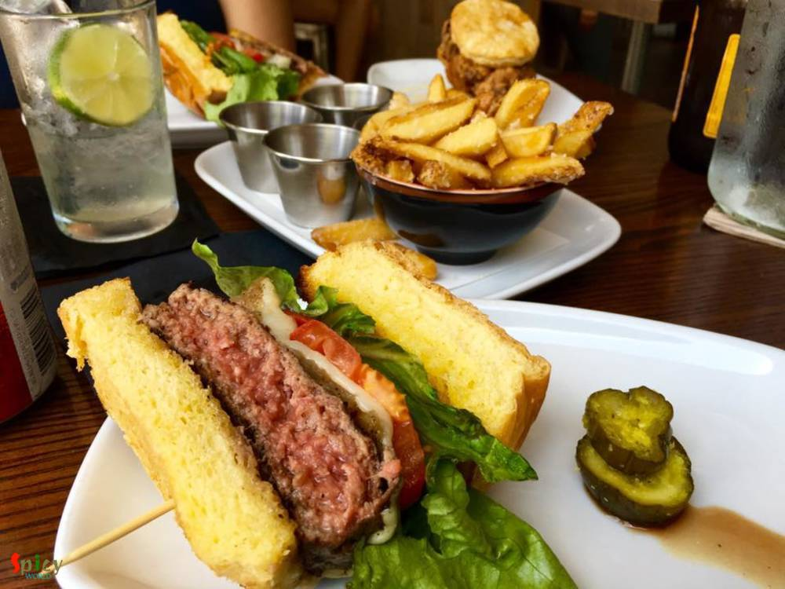

Simple and Easy Recipes

Nonveg Recipe
Jul 12, 2016
In USA, every Indian resturant serves 'chicken tikka masala' and it tastes delicious. I never had it in India, don't know why ? Tikka sized grilled chicken, onion and bell peppers are cooked in a tomato based creamy gravy. After tasting this dish several times in restaurants, last month I thought of making it at home. Few months ago I uploaded the recipe of 'chicken tikka kabab', so I am going to ...


Nonveg Recipe
Jul 8, 2016
This particular recipe calls for 'bombay duck fish' / loitta maach, but we couldn't get fresh bombay duck here, that's why I used rohu. 'Macher Jhuri' is nothing but a dry preparation of crumbled / mashed fish, which is typically bengali and goes best with steamed rice. Don't forget to add cubed potatoes because without them this curry will be totally incomplete. Try this easy recipe in your kitch ...

Veg Recipe
Jul 6, 2016
I find this particular recipe of pulao very relaxing and different. 'Achaar' / pickle itself is a very tasty ingredient. With rice and some veggies it creates a very beautiful dish which takes so little time to cook. If you are looking for easy but unique weeknight dinner, then 'Achaari Pulao' along with some raita and salads should be the one for you. This is a very flexible preparation, you can ...

Featured Post
Jul 4, 2016
Texas is famous for the Barbecue, we keep on hearing this for long time!! We were planning to have it tasted to justify what we are hearing. We decided to use this 4th July long weekend to taste that. And once again it's Subhodip, our friend who found one of the best spot around the city. We truly enjoyed the BBQ. While coming back we also visited Radha Madhav Dham.

Featured Post
Jul 3, 2016
Long Weekend needs some activity and we are pretty much lazy this time, we never like to visit any place or go anywhere long in long weekends as its the time of the year where all the people go out, roads are crowded and hotels/airlines are pricy, so we decided to stay back this weekend a well but decided to enjoy the Food around the place so we hit Downtown Austin yesterday and our destination wa ...

Nonveg Recipe
Jun 29, 2016
Our common friend Subhodip visited our house last weekend for a dinner. He is a real foodie and have a very good knowledge about food and restaurants. So, I wanted to make something new on chicken for him and also for my blog. I have already posted 'mutton dopyaza' recipe, then I thought this time why not with chicken? Confirmed the idea with my hubby and 'chicken dopyaza' got selected for main-co ...

Veg Recipe
Jun 24, 2016
Panchmel Daal is a very healthy and traditional Rajasthani dish, which you can make with five types of lentil - yellow moong, urad, masoor, toor, whole moong / chana daal. This daal is also known as 'panchkuti daal'. This dish is fully packed with protien and nutrition, also it requires very less oil. You can enjoy this delicious, thick consistancy daal with plain roti, bati or rice. Not only the ...

Veg Recipe
Jun 23, 2016
After scorching heat of summer, first few days of monsoon are my favourite. In those days I don't like to stand in front of the gas for long time, because in the meantime you can enjoy the rain by sitting beside the window. I think you guys have already guessed that I am talking about one pot meal - they are so easy to cook. One of the famous one pot meal in Bengal is 'khichuri' / khichdi. I have ...

Nonveg Recipe
Jun 22, 2016
'Keema Aloo' is my favourite curry when it comes to a fuss free but yummy dinner. It's so rich and spicy that there is no other meat curry which you can make in such a less time. I used mutton keema but feel free to use chicken mince. After adding the cubed potatoes, this dish becomes a killer ! Serve this with plain rice or paratha, every time 'keema aloo' will be a hit. It is also a very good ma ...

Veg Recipe
Jun 17, 2016
Most probably I am the only blogger who have taken so long to post about her own regional recipe of 'phuchka'. Because almost every blogger has their own regional recipe of 'panipuri / golgappa'. But it's better late than never. In Kolkata I never eat 'phuchka' with sweet chutney, always with tangy tamarind water ? and believe me there is no fun of having them sweet, the taste has to be spicy and ...